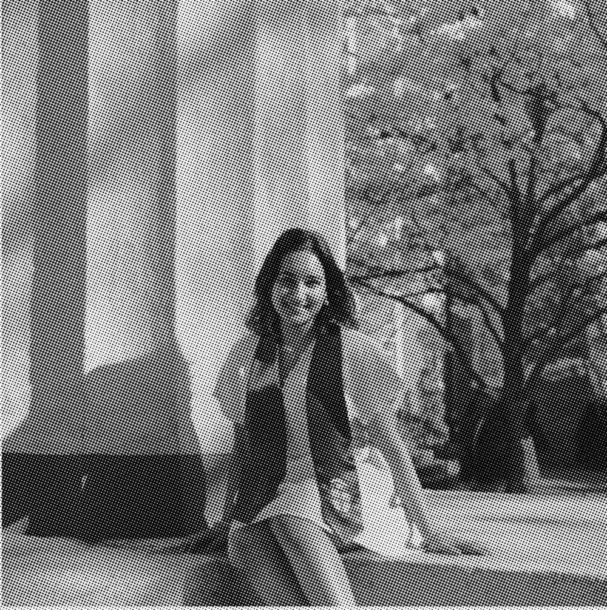

Brown has truly been my dream school. It gave me four years full of growth, creativity, and community. Thank you to Rewriting the Code and Emma Bowen Foundation, the best organizations eva, for providing me the resources to be here today. Special thanks to Claribel Nunez for always checking in on me and being a steadfast guide! Lastly, endless thanks to my friends, family, and teachers who cheered me on every step of the way.

Officially a Brown alum!
Brown has truly been my dream school. It gave me four years full of growth, creativity, and community. Thank you to Rewriting the Code and Emma Bowen Foundation, the best organizations eva, for providing me the resources to be here today. Special thanks to Claribel Nunez for always checking in on me and being a steadfast guide! Lastly, endless thanks to my friends, family, and teachers who cheered me on every step of the way.
Lastly, endless thanks to my friends, family, and teachers who cheered me on every step of the way.
Congrats to all the graduates this year, and I'm excited for what comes next!
Officially a Brown alum! This May, I graduated from Brown University with a B.S. in Computer Science and B.A. in Literary Arts! My heart is so full I don't know where to start.
Officially a Brown alum! This May, I graduated from Brown University with a B.S. in Computer Science and B.A. in Literary Arts! My heart is so full I don't know where to start.
Brown has truly been my dream school. It gave me four years full of growth, creativity, and community. Thank you to Rewriting the Code and Emma Bowen Foundation, the best organizations eva, for providing me the resources to be here today. Special thanks to Claribel Nunez for always checking in on me and being a steadfast guide! Lastly, endless thanks to my friends, family, and teachers who cheered me on every step of the way.